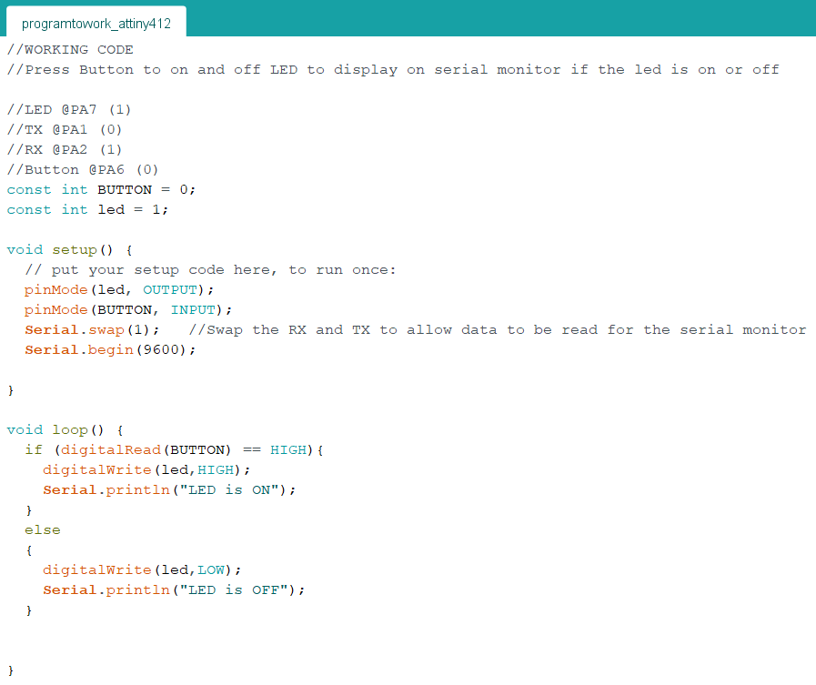
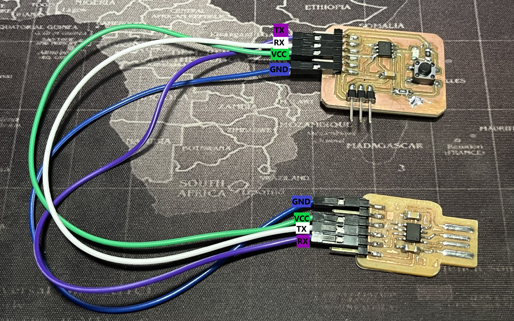

On the 7th week, after making our ATtiny412 boards, Mr Chew taught us how to install the ATtiny412 board into Arduino, how to test it and how to connect the board.
ATtiny412 Pinout Sheet
This is the ATTiny-412 Pinout Sheet for reference and we would need this in trying to refer to our connections.

Let's Get Started: How to install ATtiny412 board into Arduino
We would first need to be able to use the ATtiny412 board on the Arduino. To do that we need to install the board into Arduino
- First click this github link which will send you straight to Spence Konde's github to install the board
- Scroll down until you see the Installation Button in Blue text
- You will then see the Boards Manager Installation which you will need to copy the URL
- Then, open your Arduino IDE and go to File > Preferences
- In Preferences, Under Additional Boards Managers URLs click the button on the right side
- Then paste the URL you copied in Step 3, and click ok
- You should then be able to see megaTinyCore if you go to Tools > Board


Connect and test your ATtiny412 board
We now need to setup the ATtiny412 board and to burn the bootloader before we can test the board. But first we need to connect the ATtiny412 board to the FTDI and UPDI that we made in Electronic Production Page.
- Take your FTDI and UPDI and connect it to your ATtiny42 board in this way: (make sure you check and connect the VCC and GND correctly check your PCB design to see where is your VCC and GND in your design)
- Plug your FTDI into your computer. Then, Go to Tools > Board > megaTinyCore and select ATtiny412/402/212/202. Then go to port and select the port that your FTDI is connected to, for me my port is COM3 but you can find out using device manager on your computer to see the port that your FTDI is connected
- Then follow the settings below, after you have done setting up the setting below click burn bootloader. You only burn the bootloader if you made any changes to the settings
- You will the see at the bottom that the bootloader is running and it will display this message when it is done bootloading
- You can then create your very first program to test the led on your ATtiny412. We want to blink the led to show that it is working. You can follow the code at the bottom to blink led on the ATtiny412. Refer to the pinout sheet on where your led is connected to on your ATtiny412 board
- Then you can click the tick (Verify) and the arrow (Upload) buttons to run the code
- This is the result you should get:


.gif)
Make a Program using the ATtiny412 board
I decided to make a program using the button on my ATtiny412 board to light up the led and display on the serial monitor if the led is on or off.
Here is the code I made to perform the program
After running the code into the ATtiny412, it does not work because I have to change the connection. So I unplugged and I took out the UPDI leaving to connect the FTDI to the ATtiny412 board in this way:
Then, I open up the serial monitor on the top right hand corner

And this is what the working result looks like: